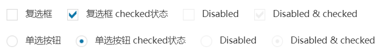

单选radio、多选checkbox默认使用了icheck插件进行美化，icheck有25 种参数 用来定制复选框和单选按钮， 8 个回调事件 用来监听输入框的状态，7个方法 用来通过编程方式控制输入框的状态，能够将输入框的状态变化同步回原始输入框中， 支持所有选择器。
icheck插件，需要引用以下文件：
调用icheck时，只需要将修改了默认值的参数列出来即可：
checkboxClass、radioClass用来设置icheck的样式，支持的样式有：red 红色、green 绿色、aero win7中那种玻璃效果、 blue 蓝色、grey 银灰色、orange 橙色、yellow 黄色、pink 粉红色、purple 紫色， 框架默认使用的是blue蓝色，如下图所示：
icheck使用方法：
$('input').iCheck('check'); //将输入框的状态设置为checked
$('input').iCheck('uncheck'); //移除 checked 状态
$('input').iCheck('toggle'); //toggle checked state
$('input').iCheck('disable'); //将输入框的状态设置为 disabled
$('input').iCheck('enable'); //移除 disabled 状态
$('input').iCheck('update'); //apply input changes, which were done outside the plugin
$('input').iCheck('destroy'); //移除iCheck样式
icheck提供了大量回调事件，都可以用来监听change事件：
| 事件名称 | 使用时机 |
|---|---|
| ifClicked | 用户点击了自定义的输入框或与其相关联的label |
| ifChanged | checked 或 disabled 状态改变了 |
| ifChecked | 输入框的状态变为 checked |
| ifUnchecked | checked 状态被移除 |
| ifDisabled | 输入框状态变为 disabled |
| ifEnabled | disabled 状态被移除 |
| ifCreated | 输入框被应用了iCheck样式 |
| ifDestroyed | iCheck样式被移除 |
使用on()方法绑定事件：
$('input').on('ifChecked', function(event){ //ifCreated 事件应该在插件初始化之前绑定
alert(event.type + ' callback');
});
下面是icheck参数列表及其默认值：
{
handle: '', //“复选框”或“单选框”只读复选框或单选按钮样式，默认是
checkboxClass: 'icheckbox', //添加到自定义复选框中的基类
radioClass: 'iradio', //添加到自定义单选框中的基类
checkedClass: 'checked', // 在checked状态下添加的类（input.checked = true）
// 如果不为空，用以代替“checkedClass”选项（input类型特定）
checkedCheckboxClass: '',
checkedRadioClass: '',
uncheckedClass: '', // 如果不为空，用以添加“unchecked”选项（input.checked = false）
// 如果不为空，用以代替“uncheckedClass”选项（input类型特定）
uncheckedCheckboxClass: '',
uncheckedRadioClass: '',
disabledClass: 'disabled', // 状态为disabled时增加的类(input.disabled = true)
// 如果不为空，用以代替“disabledClass”选项（input类型特定）
disabledCheckboxClass: '',
disabledRadioClass: '',
enabledClass: '', // 如果不为空，用以添加“enabled”选项（input.disabled = false）
// 如果不为空，用以代替“enabledClass”选项（input类型特定）
enabledCheckboxClass: '',
enabledRadioClass: '',
// class added on hover state (pointer is moved onto an input)
hoverClass: 'hover',
// class added on focus state (input has gained focus)
focusClass: 'focus',
// class added on active state (mouse button is pressed on an input)
activeClass: 'active',
// adds hoverClass to customized input on label hover and labelHoverClass to label on input hover
labelHover: true,
// class added to label if labelHover set to true
labelHoverClass: 'hover',
// increase clickable area by given % (negative number to decrease)
increaseArea: '',
// true to set 'pointer' CSS cursor over enabled inputs and 'default' over disabled
cursor: false,
// set true to inherit original input's class name
inheritClass: false,
// if set to true, input's id is prefixed with 'iCheck-' and attached
inheritID: false,
// add HTML code or text inside customized input
insert: ''
}